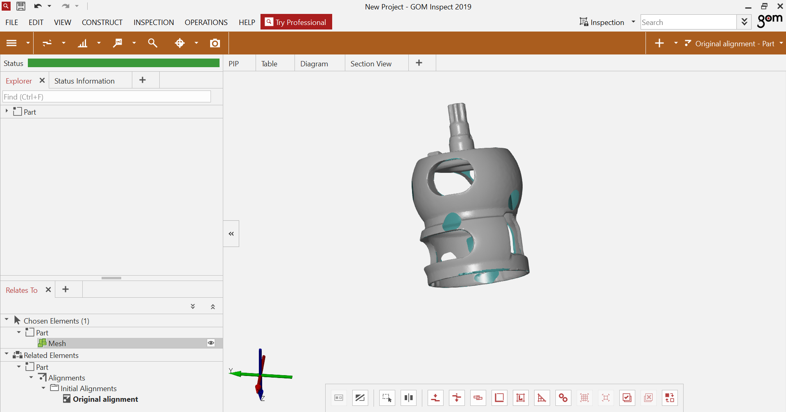
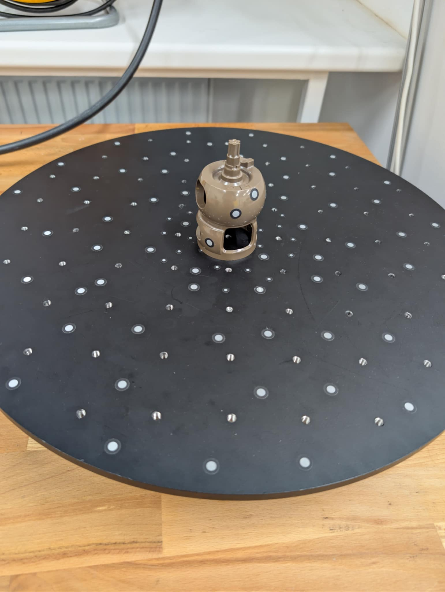
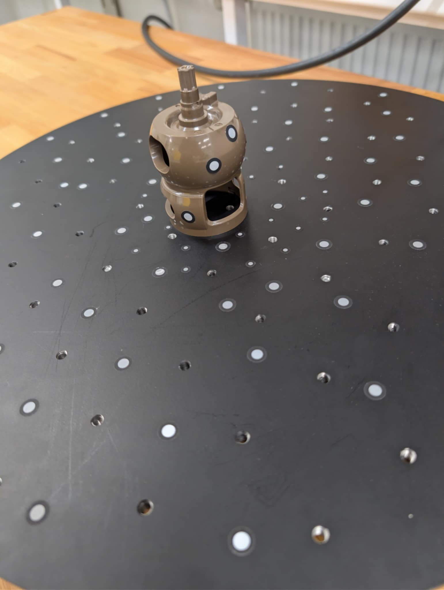
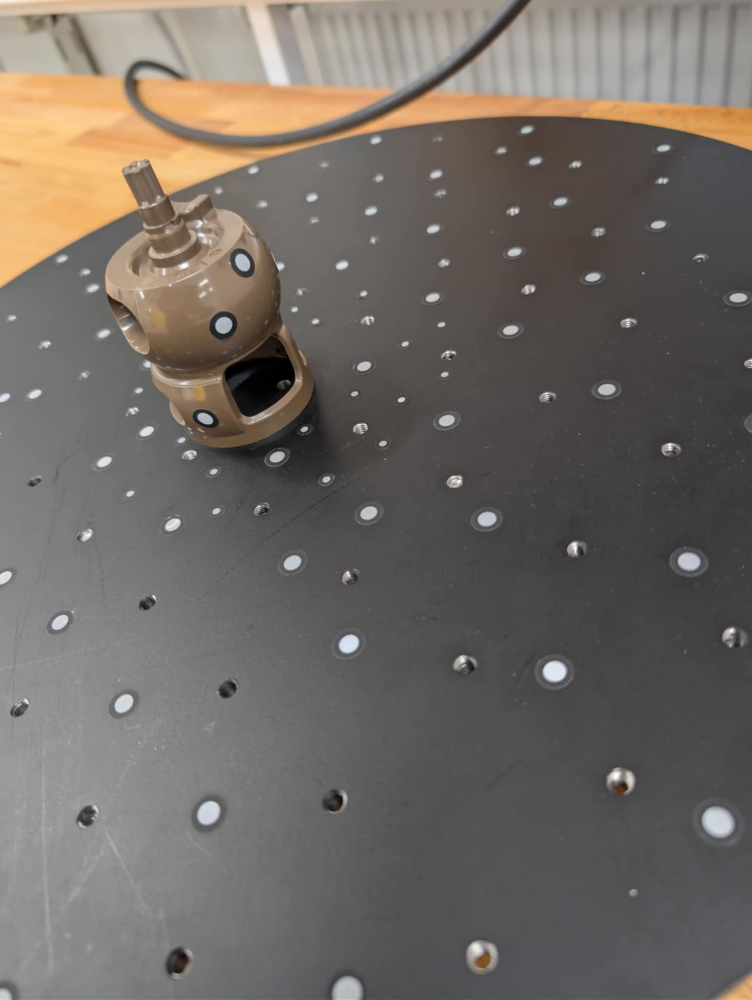
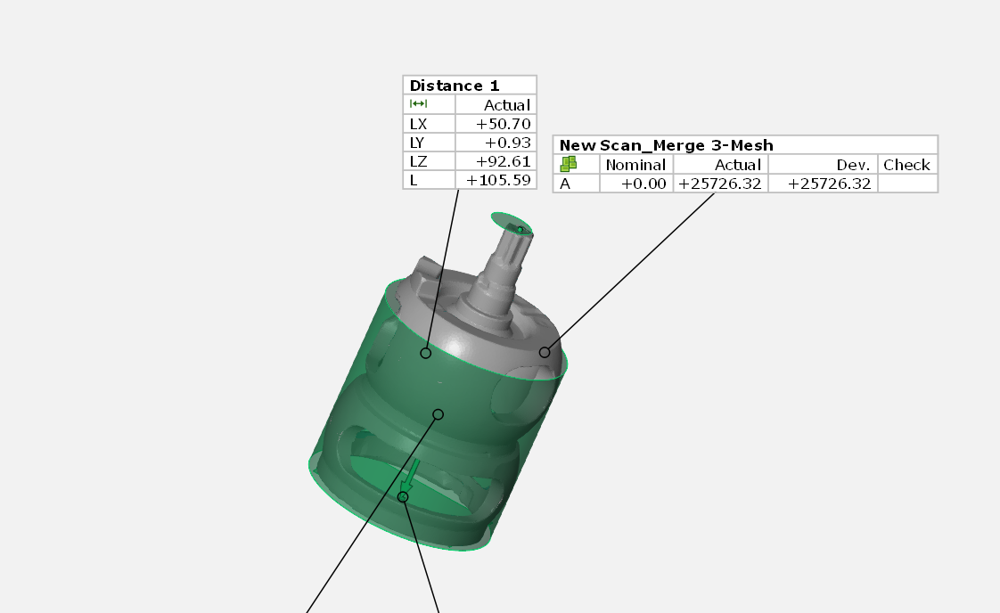

Popis projektu
V tomto projektu jsem se seznámil s technologií 3D skenování. Naučil jsem se zachytávat geometrii reálných objektů a převádět je do digitální podoby pro další zpracování. 3D skenování umožňuje rychlou digitalizaci existujících objektů.
Projekt zahrnoval práci s fotogrammetrií a laserovým skenováním. Výsledné modely lze upravovat, analyzovat nebo reprodukovat pomocí 3D tisku.

3D skenování
Průběh práce
-
I
Příprava objektuVýběr vhodného objektu a jeho příprava - čištění, matování lesklých povrchů.
-
II
Nastavení skeneruKalibrace 3D skeneru, nastavení rozlišení a kvality skenování.
-
III
SkenováníPostupné snímání objektu ze všech úhlů pro kompletní zachycení geometrie.
-
IV
Zpracování datSpojení skenů, čištění dat, vyplňování děr a optimalizace 3D modelu.
Výsledky
Projekt 3D skenování přinesl kvalitní digitální kopie reálných objektů:
- ● Přesné 3D modely zachycující geometrii a texturu objektů
- ● Optimalizované mesh připravené pro 3D tisk nebo další úpravy
- ● Zkušenosti s reálnými omezeními technologie (lesklé povrchy, detaily)
- ● Workflow od fyzického objektu k editovatelnému 3D modelu
Co jsem se naučil
- ✔ Typy skenování - fotogrammetrie, laserové skenování
- ✔ Příprava objektu a správné nastavení osvětlení
- ✔ Skenování - technika postupného snímání ze všech úhlů
- ✔ Post-processing - čištění dat, vyplňování děr a optimalizace mesh
- ✔ Export formátů - STL, OBJ, PLY a další formáty 3D dat
Galerie



